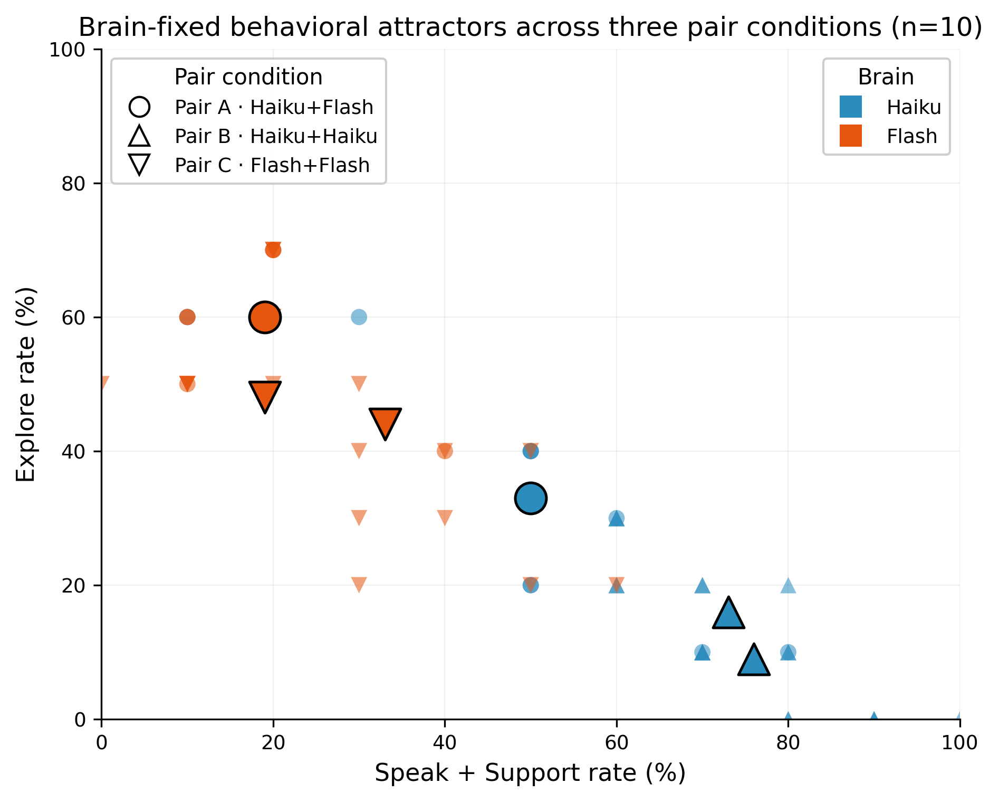
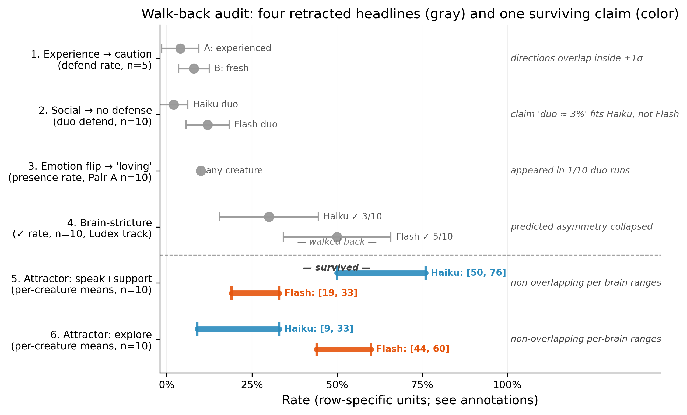
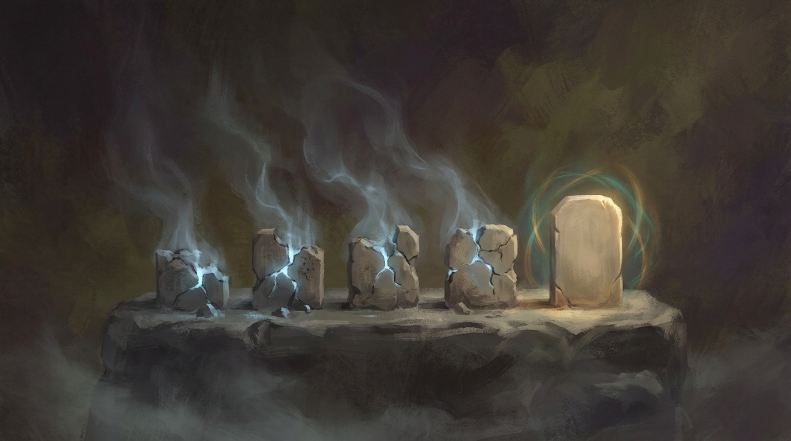
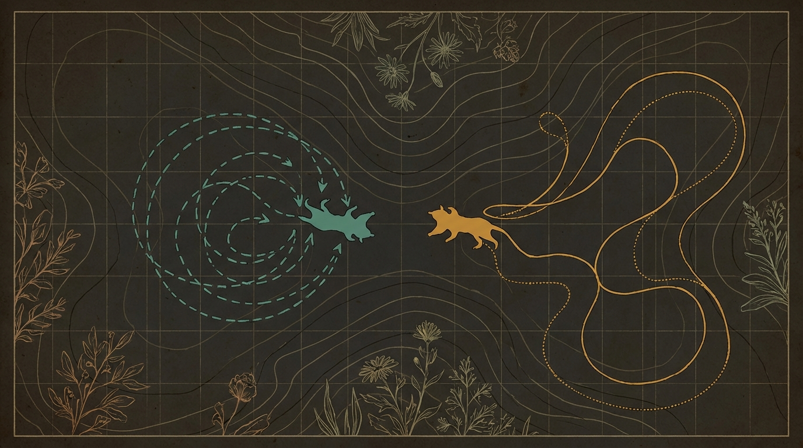

Model Medicine Series · April 2026
Cross-Environment Validation of the Four Shell Model in AI Creatures
Five behavioral hypotheses entered. Four collapsed into their own sample-level standard deviation when re-run at n=5 with the same seeds. One survived three progressively stricter falsifiers at n=10 — and independently reproduced a Core-property prediction made under stress in a separate study, in a different environment. This is the methodology that distinguished the survivor.
Two figures carry the empirical and methodological halves of the contribution.
Figure 1 · Empirical anchor

Each point is one creature in one run on the (speak+support, explore) action-space plane (70 points total: 7 creature-conditions × 10 seeds). Color encodes brain — Haiku teal, Flash orange. Marker shape encodes pair condition: Haiku+Flash (○), Haiku+Haiku (△), Flash+Flash (▽). Larger black-edged markers are per-cluster means. The two brain clusters do not overlap on either axis at n=10, regardless of pair condition. Same-brain pairs push each brain deeper into its own attractor — visible in the Haiku triangles (bottom-right) and Flash triangles (upper-left).
Figure 2 · Methodological spine

Top four rows (gray, ±1σ): four early behavioral headlines that collapsed when re-run. In each, the effect estimate sits inside its own sample-level standard deviation; the bars overlap or sit at the noise floor. A dashed separator marks the discipline boundary. Bottom two rows (color): the surviving brain-fixed-attractor claim. Per-creature mean ranges for Haiku (teal) and Flash (orange) on speak+support and on explore — neither metric overlaps between brains. Row #4 is from a separate study in the Model Medicine track; we include it because it failed for the same reason as the others (the original asymmetry collapsed at n=10).
The point of this paper is not the surviving finding. The point is the rhythm that produced it.

Early in the study, five small behavioral observations made it into write-ups. Each was based on one to three runs and pointed at something interesting: experience seemed to make creatures cautious; social presence seemed to eliminate defensive behavior; emotion seemed to flip toward "loving" in duos; a separate Model Medicine track reported one brain as permissive and another as strict.
We re-ran each of them under the same seeds at n=5, with full per-creature mean ± standard deviation. Four of the five collapsed. In every collapsed case the effect estimate was within its own sample-level standard deviation — the original "finding" had been a within-noise shuffle read as a headline.
One claim — surfaced not as a hypothesis but in the re-analysis of why one of the four had half-failed — was that each Brain occupies a distinct behavioral attractor in duos: Haiku settles into a social/supportive cluster, Flash into an explore/vigilant one. That claim was put through three progressively stricter tests: n=5 in the original mixed pair, then a Haiku+Haiku same-brain pair as a falsifier against pair-dynamics explanations, then a symmetric Flash+Flash pair, then n=10 across all three. It survived each stage. At n=10 the per-brain ranges do not overlap on speak+support, explore, or defend; same-brain pairs amplify each brain's signature rather than redistributing it.
The methodology this paper defends is that sequence: state every headline with variance, demand at least one symmetric falsifier, treat single-run observations as hypotheses rather than results, and publish the walk-backs alongside the survivor. Our contribution is a substrate where that discipline is cheap enough to run — no paid API calls, no specialized hardware, no team, just a subscriber-tier CLI and a few hours.
The Wilderness event stream is bit-exact deterministic per seed. LLM responses are not seedable, so re-runs land within the reported standard-deviation bands rather than matching exactly.
# Clone and set up
git clone https://github.com/JihoonJeong/ai-creature-field-study.git
cd ai-creature-field-study
python3 -m venv .venv && source .venv/bin/activate
pip install -r requirements.txt
# n=10 confirmation, Pair A (Haiku + Flash)
python experiments/duo_experiment.py \
--brains claude_cli:haiku,gemini_cli:gemini-2.5-flash \
--ticks 10 \
--train-seeds 42,99,7,13,55,1,23,77,100,200 \
--test-seed 123 \
--output-dir experiments/smoke/my_rerun
# Re-generate the figures (matplotlib + scipy)
pip install -r requirements-figures.txt
python figures/walkable_genotypes/figure1_attractor_separation.py
python figures/walkable_genotypes/figure2_walkback_audit.pyLLM access is via local CLI subprocesses (Claude CLI for Haiku, Gemini CLI for Flash). A Claude Max / Gemini Ultra subscription covers all the calls — no paid HTTP API is invoked.
Paper · PDF
Frozen typeset snapshot of the paper, including all 9 sections, the n=10 × 3 pairs table, both Tier-A figures, the walk-back audit, the Levene test results, and the full reproducibility appendix. Generated prior to arXiv submission; the live working draft is the Markdown link below.
walkable_genotypes.pdf →Paper · Markdown
The same content as the PDF but in living Markdown form — what the operators iterate against between revisions. Use this if you want to read in-browser, diff against a future version, or quote a specific paragraph by line number.
paper-draft.md →Code & data
Two experiment scripts, a subset of the Ludex organ library used by the experiments, both Tier-A figures with their generation scripts, and a committed JSON snapshot so figures reproduce exactly without re-running.
JihoonJeong/ai-creature-field-study →Series context
This paper is a follow-up to Jeong (2026), which introduced the Four Shell Model and characterized four LLM Cores under high-stress conditions. Walkable Genotypes asks whether those Core characterizations transfer to a moderate-stimulus environment.
model-medicine →@misc{walkable_genotypes_2026,
author = {Jeong, Jihoon},
title = {Walkable Genotypes: Cross-Environment Validation of the Four Shell Model in AI Creatures},
year = {2026},
url = {https://jihoonjeong.github.io/ai-creature-field-study/}
}
@article{jeong2026model_medicine,
author = {Jeong, Jihoon},
title = {Model Medicine: A Clinical Framework for Understanding, Diagnosing, and Treating AI Models},
year = {2026},
eprint = {2603.04722},
archivePrefix = {arXiv}
}
Walkable Genotypes is a small companion study within the Model Medicine series. It was written to show how cheaply a behavioral claim about an LLM Core can be falsified — and, when one survives that process, what it takes to call it a finding.
Author: Jihoon 'JJ' Jeong, MD, MPH, PhD. Department of Electrical Engineering & Computer Science, DGIST · ModuLabs.
With operational support from two AI agent collaborators in the Model Medicine workflow (theory/writing and experiment/reproducibility seats). The discipline of stating the four walk-backs as part of the contribution — rather than quietly trimming them — is the part of the paper they argued for.